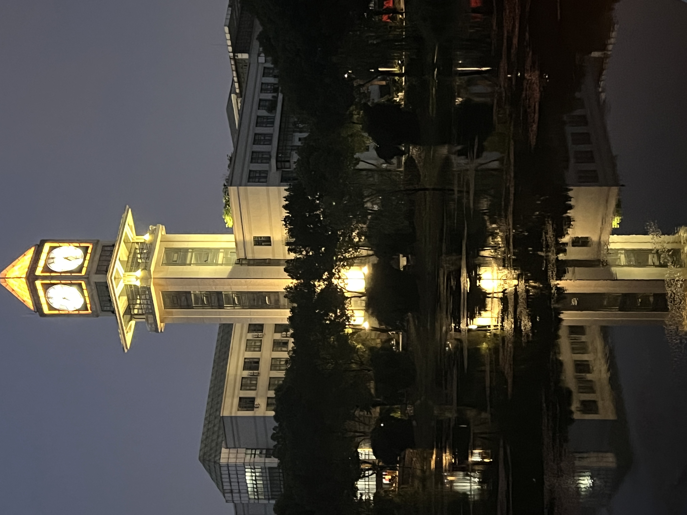
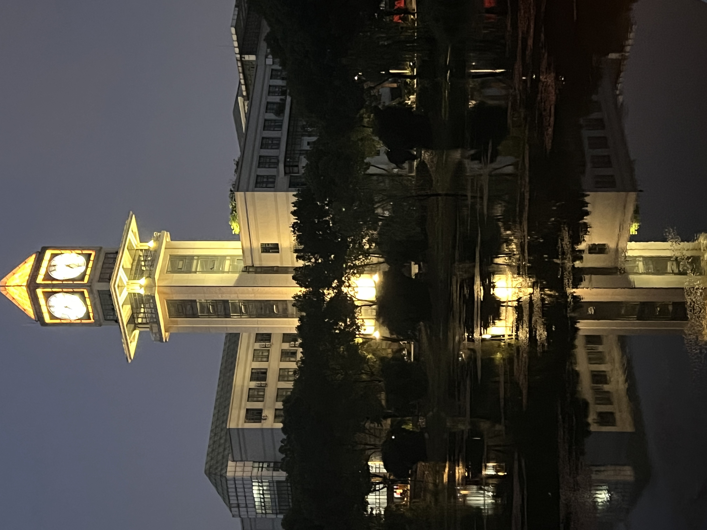

我除了完成学校的课业和参加比赛，还利用课余时间发掘自己的兴趣爱好，如：摄影、小提琴、骑行；
利用假期时间走出湖北，去看祖国的大好河山和各具特色的城市建设；
此外我在大一学年还额外报名参与了英语口语班的学习，锻炼了自己的口语表达能力以及扩展了思维方式……
Jin Yaxin's self-introduction

我除了完成学校的课业和参加比赛，还利用课余时间发掘自己的兴趣爱好，如：摄影、小提琴、骑行；
利用假期时间走出湖北，去看祖国的大好河山和各具特色的城市建设；
此外我在大一学年还额外报名参与了英语口语班的学习，锻炼了自己的口语表达能力以及扩展了思维方式……
高中毕业的暑假，学业可以暂时放松些，多出来了许多空余时间，
为了丰富我的假期生活，我报名学习了自己喜欢许久的乐器——小提琴；
自那以后我平时都会抽出零散的时间练习，稳扎稳打练好基础
虽然上大学以后回家的次数少了许多，但每个寒暑假我也都会到小提琴老师那学习一段时间
从小我就喜欢感受速度（当然是在可控范围内），喜欢运动带来的畅快，而骑行是我最能驾驭的、最感兴趣的运动方式之一，
它带给我的能量是不可替代的；
大二搬进南湖校区后，由于学校不再受理新电动车的牌照办理，我为了上课方便买了一辆公路自行车。
虽然后来上课基本上是骑共享电动车，但只要有空，我就会和骑行搭子一起规划好路线，边感受武汉大街小巷的烟火气，
边享受骑行带来的快感
随着时间的流逝，我们在成长，在衰老，身边的一切都是，所以我也越来越喜欢重复的记录，
家人，朋友，身边一切琐碎日常，微小事物；
刚被我踩着的落叶，沿着破雨棚子落下的雨水，一些有着形状的光，每天会都有的落日。
生命在居诸不息间恒久地减损着，而记录地力量会定格下生命
 

“旅行真正的快乐不在于目的地，而在于它的过程。遇见不同的人，遭遇到奇奇怪怪的事， 克服种种的困难，听听不同的语言，在我都是很大的快乐。 虽说一沙一世界，一花一天堂。更何况世界不止是一沙一花，世界是多少多少奇妙的现象积累起来的。 我看，我听，我的阅历就更丰富了”


高考结束的暑假偶然接触到了IVE这个英语学习机构，然后就开始了长达一年的口语学习；
由于性格问题，刚接触这种需要和“陌生人”敞开心扉，随心所欲地用英语聊天时，我是做不到非常自在的；
但在学习期间，IVE的各阶段老师都很有亲和力，非常耐心地引导我大胆去说，表达自己的想法，
所以在三个阶段的学习过程中，我也参与了无数次的英语talk，准备了近20次的个人pre/小组pre；
现在回想起来，当时顶着课业压力坚持下来的日子是值得的